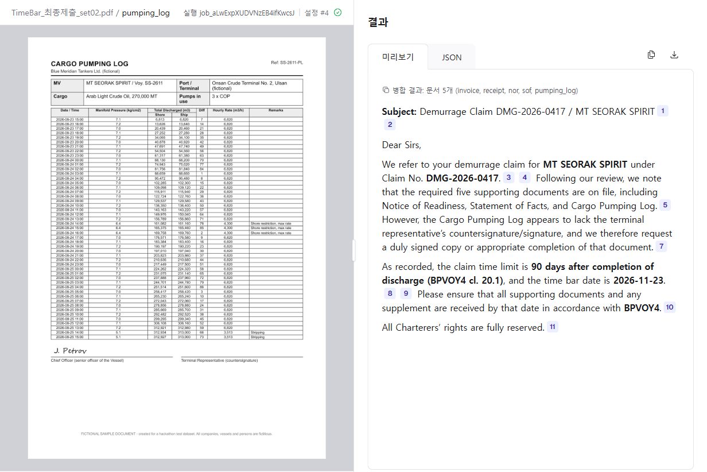

A Studio workflow that tells a charterer's claims handler, in one pass, whether a demurrage claim package is complete, signed, on time and consistent — and drafts the next document.
Team TimeBar · Yena Chang (Inha University)
| English Commercial Court | What was missing | Claim lost |
|---|---|---|
| The Sabrewing [2007] | Pumping log not signed by ship or terminal | USD 114,887 |
| The Adventure [2015], BPVOY4 | Port log and time sheets referred to in a protest | USD 364,848 |
| MTM Hong Kong [2020] | Copies of two bills of lading | USD 56,049 |
BPVOY4 cl. 20.1: the claim and all supporting documentation must reach charterers within 90 days of completion of discharge, or charterers are released from liability.
Aramco crude exports, 2025 average (Aramco Annual Report 2025)
VLCC demurrage, Mideast Gulf–East (Argus Tanker Freight, 24 Jul 2025)
Aramco's own terminal rules address vessels that "make a demurrage claim against Saudi Aramco" (Ports and Terminals Rules 2025, §11.1.2).
The demurrage claims handler on the charterer's side. After discharge, the shipowner sends a claim invoice with a bundle of evidence.
The handler opens five or six documents side by side and checks by eye: is everything here, is it signed, did it arrive in time, do the times agree?
Scope: evidence, signatures, time bar and time consistency. The laytime and amount calculation stays with the handler.
"Container demurrage free-time recalculation". We changed the cargo to crude tankers, and the decision from recalculating the amount to checking evidence, signatures, time bar and time consistency — because that is where tanker claims are won or lost.
3 document types → 6. New exception cases: unsigned pumping log, unsigned log with a protest attached, receipt on the time-bar date, another vessel's document in the bundle, a smudged scan, a second terminal's form.
| # | Decision | When | What the handler gets |
|---|---|---|---|
| 1 | 검토 필요 · Review needed | Another vessel's document, unreadable value, invoice time ≠ Statement of Facts, or unsigned log with a protest attached | Memo: which document, which value, where to look |
| 2 | 기한 위험 · Time-bar risk | Date received is later than the time-bar date (90 days after discharge) | Memo with both dates; no rejection is asserted |
| 3 | 보완 요청 · Request documents | A required document is missing, or the pumping log has no terminal signature and no protest | Draft letter to owners listing what is missing |
| 4 | 지급 검토 가능 · Clear for payment review | All checks pass (received on the time-bar date counts as in time) | Payment-review memo with the confirmed facts |
Output keys, identical in the workflow and the answer key: claim_no vessel_name decision reason missing_documents
The "Hoses Disconnected" time is covered by ink on a tilted scan. The workflow must not fill it in → Review needed.
Unsigned pumping log, protest attached. BPVOY4 does not say a protest replaces the signature (that wording is in BPVOY3). We do not assume → Review needed.
The time-bar date is read from the charterer's receipt record and compared with the date received. The model never counts 90 days itself.
10 claim packages, 51 documents, all four types: simple 28 · other forms 8 · exceptions 10 · low quality 6. Every decision value is tested.
Upstage Studio reads and decides. Claude built the test documents and scores the runs. The answer key comes from rule code, not from either model's output.
| Case | Situation | Expected | Config #2 | Config #3 | Config #4 |
|---|---|---|---|---|---|
| set01 | Complete package | 지급 검토 가능 | ✓ | ✓ | ✓ |
| set02 | Pumping log unsigned, no protest | 보완 요청 | ✓ | ✓ | ✓ |
| set03 | Received one day after the time-bar date | 기한 위험 | ✗ 검토 필요 | ✓ | ✓ |
| set04 | Received on the time-bar date | 지급 검토 가능 | ✓ | ✓ | ✓ |
| set05 | Notice of Readiness missing | 보완 요청 | ✓ | ✓ | ✓ |
| set06 | Unsigned log with protest attached | 검토 필요 | ✓ | ✓ | ✓ |
| set07 | Invoice time 6 hours later than Statement of Facts | 검토 필요 | ✓ | ✓ | ✓ |
| set08 | Another vessel's pumping log in the bundle | 검토 필요 | ✓ | ✓ | ✓ |
| set09 | Tilted, blurred scan with a covered value | 검토 필요 | ✓ | ✓ | ✓ |
| set10 | Second terminal's form, extra receipt in the bundle | 지급 검토 가능 | ✓ | ✓ | ✓ |
decisions correct on the full run of config #3 and again on config #4 (the submitted version)
set03 should be time-bar risk. The first full run said review needed: the extraction marked a clean, dense 50-row pumping log as "unclear". I removed the readability flag from that document and narrowed it to covered or smudged boxes on the Statement of Facts.
per claim package in Studio (limit: 15 minutes)

A draft letter to owners in English: claim number, vessel, the unsigned or missing document, the time-bar date, charterers' rights reserved. Shown: set02, unsigned pumping log.
A short memo: the two dates, or the document and value that disagree, and where to look in the original.
A memo of what was confirmed, so the handler goes straight to the laytime calculation.
| Fact | Source |
|---|---|
| BPVOY4 cl. 20.1 (90 days, all supporting documentation); The Adventure, USD 364,847.78 | Kassiopi Maritime v Fal Shipping [2015] EWHC 318 (Comm) — caselaw.nationalarchives.gov.uk/ewhc/comm/2015/318 |
| The Sabrewing, USD 114,887.40 (BPVOY3 cl. 16(a)) | Waterfront Shipping v Trafigura [2007] EWHC 2482 (Comm) — caselaw.nationalarchives.gov.uk/ewhc/comm/2007/2482 |
| MTM Hong Kong, USD 56,049.36 | Tricon Energy v MTM Trading [2020] EWHC 700 (Comm) — caselaw.nationalarchives.gov.uk/ewhc/comm/2020/700 |
| Owners succeeded on similar facts | The Amalie Essberger [2019] EWHC 3402 (Comm) — caselaw.nationalarchives.gov.uk/ewhc/comm/2019/3402 |
| Crude exports 6.3 mmbpd (2025) | Aramco Annual Report 2025, Results section, p. 61 — aramco.com |
| Demurrage claims against Saudi Aramco, §11.1.2 | Saudi Aramco Ports and Terminals — Rules, Regulations and General Information, 2025 Edition — aramco.com |
| VLCC demurrage USD 45,000/day, Mideast Gulf–East | Argus Tanker Freight, Issue 25-144, 24 Jul 2025 |
| Starting card U038 | Upstage Studio Use Case Explorer — studio-usecase-explorer.vercel.app |
Not found, so not claimed: how often claims are time-barred, how long a manual review takes, any Aramco-internal procedure.